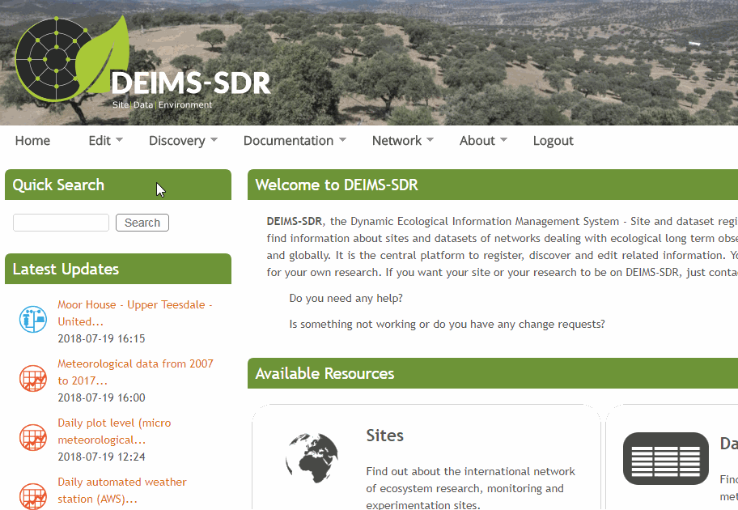

Working with my content¶
Finding my content¶
You can find your (both published and unpublished) sites under:
https://data.lter-europe.net/deims/site/my
You can also access that through the menu. It’s under Edit/Site/My Sites

Publishing my content¶
In order to be accesible by other people than you, you need to publish your content. Whether or not you content is published is indicated in the my sites/datasets/... menus.
Deleting my content¶
If you want to delete a person. Click on the person you created. You should now see a delete link. Just click it. Not every user has the right to delete people. Please contact us if you have any further questions.
Please keep in mind that if you delete a person you also delete all references to that person. This means that every content you provided, for example as a metadata provider, will be left empty if the corresponding person was deleted. You can see the associated sites and datasets when viewing a person record.
You can’t delete a site. If a site entry becomes obselete, please write us an e-mail or use the feedback button.